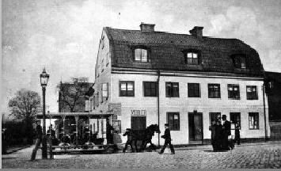
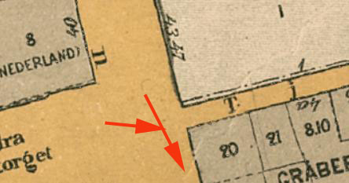
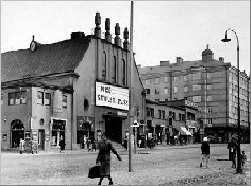
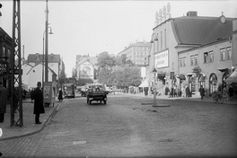
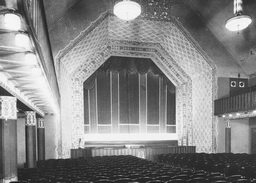
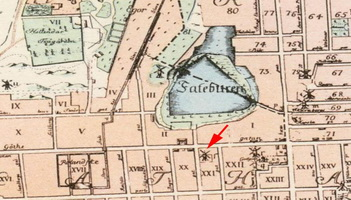
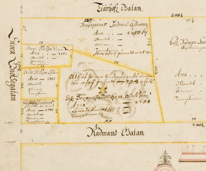

Södermalm i tid och rum

14.
Tjärhovsgatan 2, Götgatan 49, kv Gråberget. 1900. På gatan passerar en hästspårvagn.

{kind=link}

14
Stora teatern Götgatan 49.1928. Götgatan 49-53, Tjärhovsgatan 2, Folkungagatan 50-52, kv Gråberget, Vägaren. I bakgrunden ett nybyggt hus i kv Vägaren, hörnet Götgatan/Folkungagatan.
|
Wikipedia:
Stora Teatern var en biograf vid Götgatan 49 på Södermalm i Stockholm. Biografen öppnade 1916 och stängde 1931. Därefter revs byggnaden och på platsen uppfördes Hotell Malmen.
Den låg i en egen byggnad i kvarteret Gråberget i hörnet Götgatan / Tjärhovsgatan. Byggherre var byggmästaren och biografägaren John A. Bergendahl som anlitade arkitekt Knut Nordenskjöld och ingenjören Nils Cronholm att utforma byggnaden. Exteriören gestaltades av Nordenskjöld i stram klassicism medan interiören gick i jugendstil med kulörerna blått och vitt. Långsidan sträckte sig längs med Tjärhovsgatan och gavelsidan mot Götgatan, där även entrén låg. Takkrönet mot Götgatan smyckades av fyra höga urnor.
 |

Stora Teatern var på sin tid en av Stockholms största och elegantaste biografer. Salongen hade plats för 878 besökare uppdelade på parkett och flera läktare. Stora Teatern var en stumfilmsbiograf varför en 12-mannaorkester hade till uppgift att stå för de nödvändiga ljudeffekterna. Orkestern var placerad inom en barriär nedanför scenen och filmduken .
När Bergendahl avvecklade sin biografrörelse i februari 1929 övertogs Stora Teatern liksom hans andra biografer av Svensk Filmindustri. Men tiden i SF:s regi blev kort och redan 1931 revs Stora Teatern för bygget av Katarinatunneln, den första lokalbanetunneln i Stockholm under Götgatan (idag Gröna linjen). På platsen uppfördes sedan Hotell Malmen som stod färdigt 1951.
|
Ur Björn Hasselblad: Stockholmskvarter, 1979 Kv Gråberget Detta kvartersnamn tillhör de äldsta på Södermalm och finns nämnt i hävderna omkring 1650. På Tillaei karta (1733) finns kvarnen Borgmästarquarn markerad inom västra delen av kvarteret, som då var beläget på ett berg, därav namnet. Numera ligger Hotell och Restaurang Malmen inom kvarteret vid Götgatan 49-51 och vid Tjärhovsgatan 4 ligger restaurang Kvarnen, som troligen fått sitt namn efter den gamla Borgmästarquarnen.
 Tillaei karta 1733 |
{kind=link}
{kind=link}
{kind=link}
|
 Holms tomtbok 1674 |
Wikipedia
Borgmästarkvarnen är uppkallad efter rådmannen och borgmästaren Hans Olofsson-Törne (död 1671). Han ägde en tomt och en kvarn i kvarteret Gråberget, som har kvar sitt namn sedan 1600-talet och hör till de äldsta på Södermalm. Kvarnen var en stolpkvarn från 1600-talet och är inritad på Holms tomtbok från 1674. Då var Olofsson död, varför det står Sal. (salige) Borgmästaren Hans Olofssons. Kvarnen finns även med på Petrus Tillaeus karta från 1733, där den kallas Borgmästar qu:.
Kvarnen var fortfarande känd år 1863 men försvann någon gång därefter. På Heinrich Neuhaus Stockholmspanorama från 1870-talet finn den ej längre kvar. På platsen uppfördes 1876 Stockholms södra jäsfabrik och senare Hotell Malmen (invigd 1951). Sedan den välkända Källaren Hamburg vid Götgatan i oktober 1908 stängdes för rivning övertog restaurang Grå Kvarn (numera restaurang Kvarnen) utskänkningstillståndet. Källaren Hamburg låg på platsen där nuvarande Göta Lejon ligger, Götgatan 55. Restaurang Kvarnen ligger vid Tjärhovsgatan och har troligen fått sitt namn efter den gamla Borgmästarkvarnen. Kvarnen låg ungefär där Hotell Malmen nu finns och försvann 1863.
|
{kind=link}